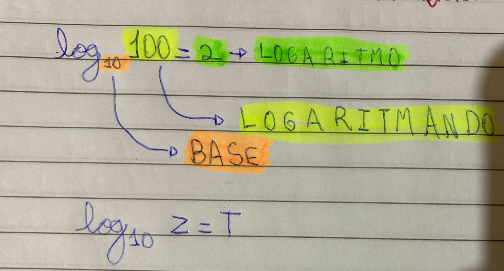

O Logaritmo serve para você descobrir quanto elevado a T é Z. A resposta do logaritmo é um expoente de uma potência (log10100=102).
1-Não existe logaritmo com logaritmado 0;
2-Não existe logaritmo com base 0;
3-Não existe logaritmo com base negativa;
4-Não existe logaritmo com logaritmando negativo;
5-Logaritmo de 1 com qualquer base o resultado é zero;
6-Todo logaritmo na base 1 é 1.